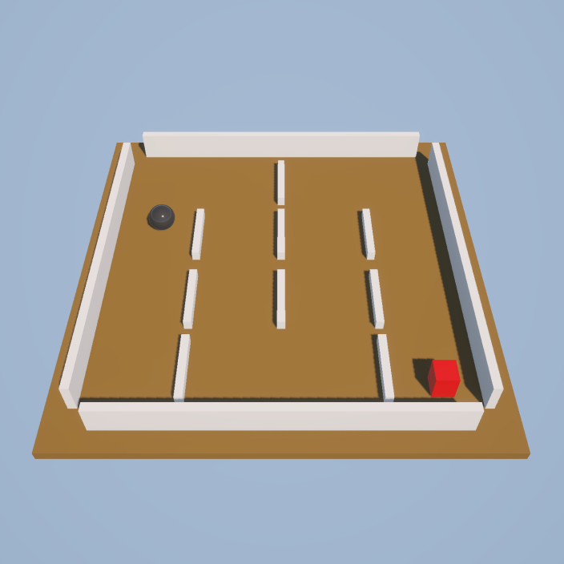
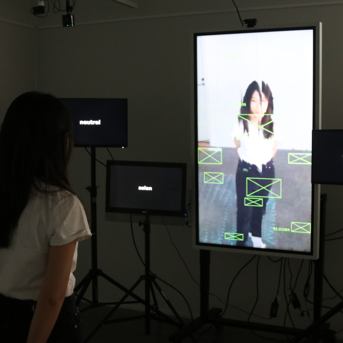

Hi👋 My name is Mengqiao Liu. I’m a digital user experience designer and new media artist with a background in engineering💻 and design🎨.
I’m currently pursuing a Master’s Degree in New Media at Aalto University. My multidisciplinary background gives me a unique and broad perspective, blending technical and creative skills in innovative ways. For example, I designed and developed this website.
In my spare time, I play tennis🎾 and bridge♠️ to keep myself physically and mentally active. Both of them require strategic thinking, concentration, and a good understanding of other's moves which will also benefit my research, design, and development.
Currently: Creative Technologist Intern @ BMW, Munich.
Exhibitions
2025
Minds-On: Digital 2025
#Interactive Art
#Game & Spatial Perception
.jpg)
You might like...(猜你喜欢) 2024
#Interactive Art
#Data Privacy & AI generate

SurFace 2024
#Interactive Art
#Identity & data extraction

Minds-On 2023
#Interactive Art
#Game & Spatial Perception

Kwai recruitment business payment function 2023
#UX
#App & Web & Software

Kwai Spring Festival blind date 2022
#UX
#App

Research on motions 2020
#Research
#Motions

Behind the Mirror 2020
#Interactive Art
#Social Dilemma & Three-Way Handshake